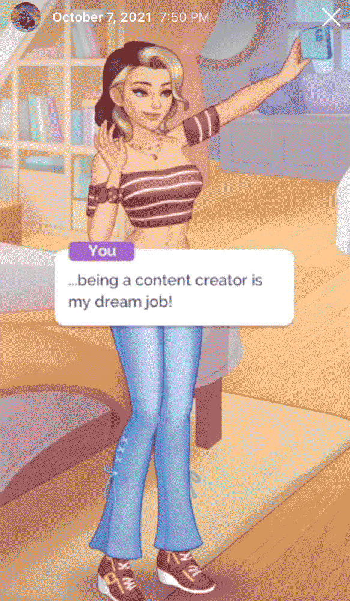
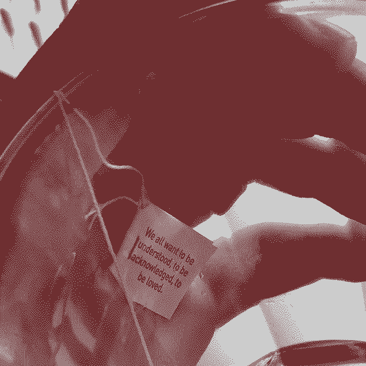
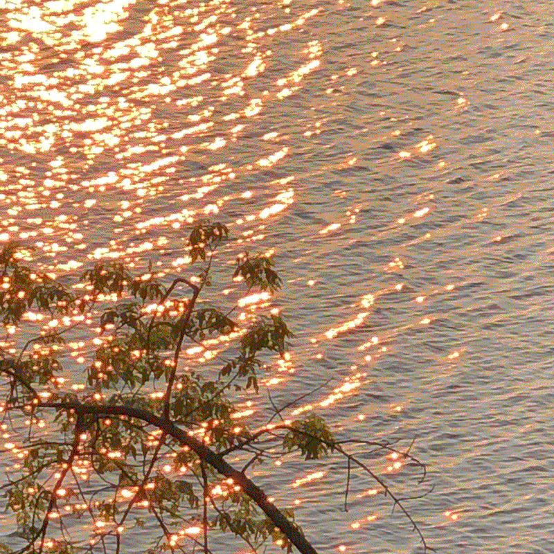

Practicing human being scurrying around in New England. Designer by trade.
Likes and Dislikes
sketchy freemium mobile game ads
internet chum
compact foods and phone charms
watches
diagrams
You are cordially invited to drop a message in the guestbook.

weather

June 13Chance encounters with text. When was the last time a teabag invited you to pause for a while?June 3I gathered with five fellow HTML Energy seekers in the Boston public garden on June 3
for a freewrite. Here is an account of the outing.

goods
Are.na Annual
A collection of texts, conversations, art, and more about service. Designed with Daniel Pianetti. (273pp, 4.5 × 7.7") [Are.na Store]
memory garden
A sketch collecting some anonymous memories from the little memory app. [Program]
Shape of Language
Typesetting transcripts of Everything Is Alive episodes. A fan book (6.4MB, 5.5 × 8.5"). [Full PDF]
A Window For Two
A sketch exploring the poetics of screenshots and the window interface metaphor. Watch sunsets with your computer. [Program], [Vimeo recording]